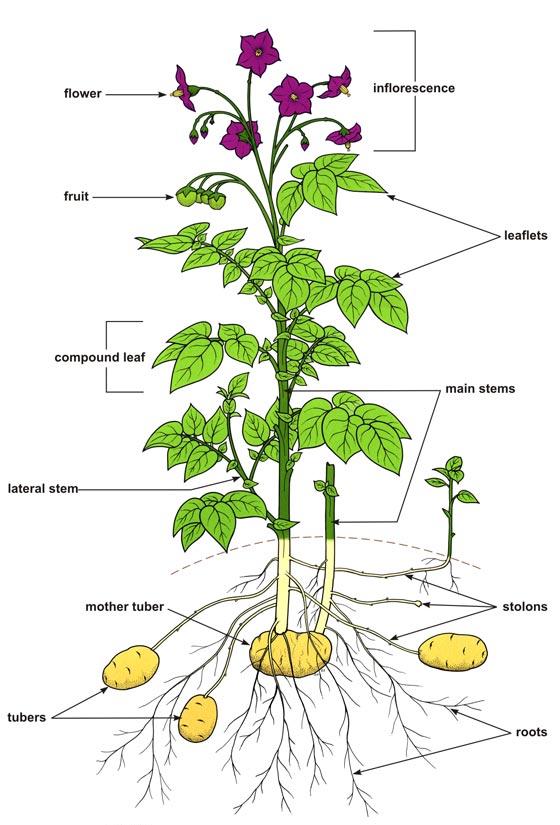

The English word "potato" comes from Spanish patata, in turn from Taíno batata, which means "sweet potato", not the plant now known as simply "potato".
The name "spud" for a potato is from the 15th century spudde, a short and stout knife or dagger, probably related to Danish spyd, "spear". Through semantic change, the general sense of short and thick was transferred to the tuber from around 1840.
At least seven languages—Afrikaans, Dutch, Low Saxon, French, (West) Frisian, Hebrew, Persian and some variants of German—use a term for "potato" that means "earth apple" or "ground apple", from an earlier sense of both pome and apple, referring in general to a (apple-shaped) fruit or vegetable.
Potato plants are herbaceous perennials that grow up to 1 metre (3.3 ft) high. The stems are hairy. The leaves have roughly four pairs of leaflets. The flowers range from white or pink to blue or purple; they are yellow at the centre, and are insect-pollinated.
The plant develops tubers to store nutrients. These are not roots but stems that form from thickened rhizomes at the tips of long thin stolons. On the surface of the tubers there are "eyes," which act as sinks to protect the vegetative buds from which the stems originate. The "eyes" are arranged in helical form. In addition, the tubers have small holes that allow breathing, called lenticels. The lenticels are circular and their number varies depending on the size of the tuber and environmental conditions. Tubers form in response to decreasing day length, although this tendency has been minimized in commercial varieties.
After flowering, potato plants produce small green fruits that resemble green cherry tomatoes, each containing about 300 very small seeds.
← Back to Contents